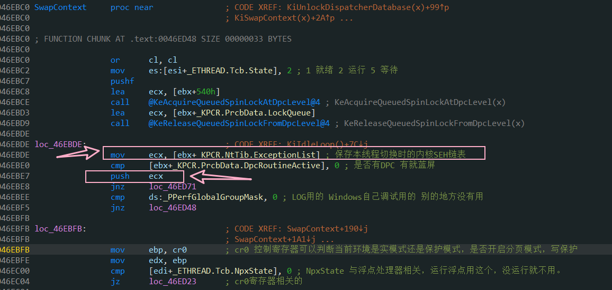

# 楔子
线程切换是操作系统的核心内容，几乎所有的内核 API 都会调用切换线程的函数。
我们要解决以下这些问题，带着问题去学习。
- SwapContext 有几个参数，分别是什么？
- SwapContext 在哪里实现了线程切换
- 线程切换的时候，会切换 CR3 吗？切换 CR3 的条件是什么？
- 中断门提权时，CPU 会从 TSS 得到 ESP0 和 SS0，TSS 中存储的一定是当前线程的 ESP0 和 SS0 吗？如何做到的？
- FS:[0] 在 3 环指向 TEB，但是线程有很多，FS:[0] 指向的是哪个线程的 TEB，如何做到的？
- 0 环的 ExceptionList 在哪里备份的？
- IdleThread 是什么？什么时候执行？找到这个函数.
- 如何找到下一个就绪线程？
- 模拟线程切换与 Windows 线程切换有哪些区别？
# Windows 线程切换
# 主动切换切换
在上一篇模模拟 Windows 线程切换 (ThreadSwitch) 中，有一个重要的函数： SwitchContext 只有调用这个函数，就会导致线程切换。
Windows 也有类似的函数： KiSwapContext
# KiSwapContext 函数
此函数在内核文件 ntkrnlpa.exe / ntoskrnl.exe 中。
在 IDA 中查看其反汇编：
.text:0046EA9C ; __fastcall KiSwapContext (x) | |
.text:0046EA9C @KiSwapContext@4 proc near ; CODE XREF: KiSwapThread ()+85↑p | |
.text:0046EA9C | |
.text:0046EA9C var_10 = dword ptr -10h | |
.text:0046EA9C var_C = dword ptr -0Ch | |
.text:0046EA9C var_8 = dword ptr -8 | |
.text:0046EA9C var_4 = dword ptr -4 | |
.text:0046EA9C | |
.text:0046EA9C sub esp, 10h ; 使用 fastcall 调用方式。 | |
.text:0046EA9C ; 寄存器传参，因此要将使用到的寄存器保存在堆栈中。 | |
.text:0046EA9F mov [esp+0Ch], ebx ; 入栈 | |
.text:0046EAA3 mov [esp+8], esi | |
.text:0046EAA7 mov [esp+4], edi | |
.text:0046EAAB mov [esp], ebp | |
.text:0046EAAE mov ebx, large fs:1Ch ; _KPCR.SelfPcr | |
.text:0046EAB5 mov esi, ecx ; ecx: 新线程的_ETHREAD | |
.text:0046EAB7 mov edi, [ebx+124h] ; 取当前正在运行的线程的结构体 | |
.text:0046EABD mov [ebx+124h], esi ; 修改 KPCR，换成新线程的 ETHREAD 结构体 | |
.text:0046EAC3 mov cl, [edi+58h] ; _ETHREAD.Tcb.WaitIrql | |
.text:0046EAC6 call SwapContext | |
.text:0046EACB mov ebp, [esp] ; 恢复新线程各种寄存器 | |
.text:0046EACE mov edi, [esp+4] | |
.text:0046EAD2 mov esi, [esp+8] | |
.text:0046EAD6 mov ebx, [esp+0Ch] | |
.text:0046EADA add esp, 10h | |
.text:0046EADD retn | |
.text:0046EADD @KiSwapContext@4 endp |
这个函数并不是真正的线程切换，只是更改了 KPCR 中的 ETHREAD 结构体。把要旧的结构体换成了新的。
关于 SwapContext 函数，后面在详细对其逆向分析。
# 查看调用 KiSwapContext 的函数
在 IDA 中使用交叉引用：
| Direction | Type | Address | Text |
|---|---|---|---|
| Up | p | KiSwapThread()+85 | call @KiSwapContext@4; KiSwapContext(x) |
发现 KiSwapThread 调用的 KiSwaoContext 。接着查看 KiSwapThread 的交叉引用：
发现有 7 个函数调用了 KiSwapThread 。我们再随便找一个函数，查看其交叉引用：
发现有 270 个函数，这就意味着我们调用了这里面的任何一个函数都会导致线程切换，而这些函数还有上层调用的它们的函数，所以我们可以得出一个结论：Windows 中绝大部分 API 都调用了 SwapContext 函数，也就是说，当前线程只要调用了 API，就会导致线程切换。
# SwapContext 函数
这个函数目前我还不能完全理解。大部分是偷看海哥视频里的注释。
在 IDA 中逆向分析如下：
.text:0046EBC0 SwapContext proc near ; CODE XREF: KiUnlockDispatcherDatabase (x)+99↑p | |
.text:0046EBC0 ; KiSwapContext (x)+2A↑p ... | |
.text:0046EBC0 | |
.text:0046EBC0 ; FUNCTION CHUNK AT .text:0046ED48 SIZE 00000033 BYTES | |
.text:0046EBC0 | |
.text:0046EBC0 or cl, cl | |
.text:0046EBC2 mov es:[esi+_ETHREAD.Tcb.State], 2 ; 1 就绪 2 运行 5 等待 | |
.text:0046EBC7 pushf | |
.text:0046EBC8 lea ecx, [ebx+540h] | |
.text:0046EBCE call @KeAcquireQueuedSpinLockAtDpcLevel@4 ; KeAcquireQueuedSpinLockAtDpcLevel (x) | |
.text:0046EBD3 lea ecx, [ebx+_KPCR.PrcbData.LockQueue] | |
.text:0046EBD9 call @KeReleaseQueuedSpinLockFromDpcLevel@4 ; KeReleaseQueuedSpinLockFromDpcLevel (x) | |
.text:0046EBDE | |
.text:0046EBDE loc_46EBDE: ; CODE XREF: KiIdleLoop ()+7C↓j | |
.text:0046EBDE mov ecx, [ebx+_KPCR.NtTib.ExceptionList] ; 保存本线程切换时的内核 SEH 链表 | |
.text:0046EBE0 cmp [ebx+_KPCR.PrcbData.DpcRoutineActive], 0 ; 是否有 DPC 有就蓝屏 | |
.text:0046EBE7 push ecx | |
.text:0046EBE8 jnz loc_46ED71 | |
.text:0046EBEE cmp ds:_PPerfGlobalGroupMask, 0 ; LOG 用的 Windows 自己调试用的 别的地方没有用 | |
.text:0046EBF5 jnz loc_46ED48 | |
.text:0046EBFB | |
.text:0046EBFB loc_46EBFB: ; CODE XREF: SwapContext+190↓j | |
.text:0046EBFB ; SwapContext+1A1↓j ... | |
.text:0046EBFB mov ebp, cr0 ; cr0 控制寄存器可以判断当前环境是实模式还是保护模式，是否开启分页模式，写保护 | |
.text:0046EBFE mov edx, ebp | |
.text:0046EC00 cmp [edi+_ETHREAD.Tcb.NpxState], 0 ; NpxState 与浮点处理器相关，运行浮点用这个，没运行就不用。 | |
.text:0046EC04 jz loc_46ED23 ; cr0 寄存器相关的 | |
.text:0046EC0A | |
.text:0046EC0A loc_46EC0A: ; CODE XREF: _ScPatchFxe+E↓j | |
.text:0046EC0A mov cl, [esi+_ETHREAD.Tcb.DebugActive] | |
.text:0046EC0D mov [ebx+_KPCR.DebugActive], cl ; 新的线程的调试状态，更新到 KPCR 中 | |
.text:0046EC10 cli ; cli 不会被时钟中断了 | |
.text:0046EC11 mov [edi+_ETHREAD.Tcb.KernelStack], esp ; 把当前的 esp 存储到旧线程的 ETHREAD 中 | |
.text:0046EC14 mov eax, [esi+_ETHREAD.Tcb.InitialStack] ; 新线程的栈底 | |
.text:0046EC17 mov ecx, [esi+_ETHREAD.Tcb.StackLimit] | |
.text:0046EC1A sub eax, 210h ; 减去 210H 就是将上面保存的浮点寄存器去掉 现在是真正的栈底了 | |
.text:0046EC1F mov [ebx+_KPCR.NtTib.StackLimit], ecx ; 更新 KPCR | |
.text:0046EC22 mov [ebx+_KPCR.NtTib.StackBase], eax ; 更新 KPCR | |
.text:0046EC25 xor ecx, ecx | |
.text:0046EC27 mov cl, [esi+_ETHREAD.Tcb.NpxState] ; 判断 NpxState 有没有浮点支持。 | |
.text:0046EC27 ; 如果上一个线程和要替换的线程对浮点支持是一样的那就不用换 CR0，不一样就要换。 | |
.text:0046EC2A and edx, 0FFFFFFF1h | |
.text:0046EC2D or ecx, edx | |
.text:0046EC2F or ecx, [eax+20Ch] | |
.text:0046EC35 cmp ebp, ecx | |
.text:0046EC37 jnz loc_46ED1B | |
.text:0046EC3D lea ecx, [ecx+0] | |
.text:0046EC40 | |
.text:0046EC40 loc_46EC40: ; CODE XREF: SwapContext+15E↓j | |
.text:0046EC40 test dword ptr [eax-1Ch], 20000h ; 检查是否是虚拟 8086 模式， | |
.text:0046EC40 ; 如果不是的话 eax-10h 也就是减掉_KTRAP_FRAME 中的 | |
.text:0046EC40 ; +0x07c V86Es : Uint4B | |
.text:0046EC40 ; +0x080 V86Ds : Uint4B | |
.text:0046EC40 ; +0x084 V86Fs : Uint4B | |
.text:0046EC40 ; +0x088 V86Gs : Uint4B | |
.text:0046EC40 ; 4 个成员。 | |
.text:0046EC40 ; 如果是那就不减。 | |
.text:0046EC47 jnz short loc_46EC4C ; 取 TSS（TSS 就是 3 环向 0 环切的时候，去 TSS 取 ESP0 和 SS0 别的没用） | |
.text:0046EC49 sub eax, 10h | |
.text:0046EC4C | |
.text:0046EC4C loc_46EC4C: ; CODE XREF: SwapContext+87↑j | |
.text:0046EC4C mov ecx, [ebx+_KPCR.TSS] ; 取 TSS（TSS 就是 3 环向 0 环切的时候，去 TSS 取 ESP0 和 SS0 别的没用） | |
.text:0046EC4F mov [ecx+_KTSS.Esp0], eax ; 更新 TTS 中的 Esp0 | |
.text:0046EC52 mov esp, [esi+_ETHREAD.Tcb.KernelStack] ; 将新线程的 esp 存到当前的 esp 寄存器中 | |
.text:0046EC55 mov eax, [esi+_ETHREAD.Tcb.Teb] ; 当前线程有很多状态 一份在 ETHREAD 里面 还有一个备份在 FS 中 | |
.text:0046EC55 ; 这样的好处是 在 3 环可以通过 fs 获取当前线程的信息 | |
.text:0046EC58 mov [ebx+_KPCR.NtTib.Self], eax ; 临时存储新线程的 TEB | |
.text:0046EC5B sti ; 开启时钟中断 | |
.text:0046EC5C mov eax, [edi+_ETHREAD.Tcb.ApcState.Process] | |
.text:0046EC5F cmp eax, [esi+_ETHREAD.Tcb.ApcState.Process] ; 查看是否是同一个进程内的线程切换 | |
.text:0046EC62 mov [edi+_ETHREAD.Tcb.IdleSwapBlock], 0 | |
.text:0046EC66 jz short loc_46ECA8 ; 如果是一个进程内的线程切换，则跳转。 | |
.text:0046EC68 mov edi, [esi+_ETHREAD.Tcb.ApcState.Process] ; 如果不是一个进程，取出新线程的进程结构体 | |
.text:0046EC6B mov ecx, [ebx+_KPCR.SetMember] | |
.text:0046EC6E xor [eax+34h], ecx | |
.text:0046EC71 xor [edi+_EPROCESS.Pcb.ActiveProcessors], ecx ; ActiveProcessors 记录了当前进程正在哪些处理器上运行 | |
.text:0046EC74 test [edi+_EPROCESS.Pcb.LdtDescriptor.LimitLow], 0FFFFh ; 判断 LDT | |
.text:0046EC7A jnz short loc_46ECED | |
.text:0046EC7C xor eax, eax | |
.text:0046EC7E | |
.text:0046EC7E loc_46EC7E: ; CODE XREF: SwapContext+156↓j | |
.text:0046EC7E lldt ax ; 修改 LDT 寄存器 | |
.text:0046EC81 lea ecx, [ebx+540h] | |
.text:0046EC87 call @KeReleaseQueuedSpinLockFromDpcLevel@4 ; KeReleaseQueuedSpinLockFromDpcLevel (x) | |
.text:0046EC8C xor eax, eax | |
.text:0046EC8E mov gs, eax ; GS 清零 | |
.text:0046EC90 assume gs:nothing | |
.text:0046EC90 mov eax, [edi+_EPROCESS.Pcb.DirectoryTableBase] ; 取新线程的 CR3 | |
.text:0046EC93 mov ebp, [ebx+_KPCR.TSS] | |
.text:0046EC96 mov ecx, dword ptr [edi+_EPROCESS.Pcb.IopmOffset] | |
.text:0046EC99 mov [ebp+_KTSS.CR3], eax | |
.text:0046EC9C mov cr3, eax ; 切换 CR3 | |
.text:0046EC9F mov [ebp+_KTSS.IoMapBase], cx ; 存储 IO 权限位图到 TSS。当前线程的的 IO 权限位图 Windows 2000 以后不用了。 | |
.text:0046ECA3 jmp short loc_46ECB3 | |
.text:0046ECA3 ; --------------------------------------------------------------------------- | |
.text:0046ECA5 align 4 | |
.text:0046ECA8 | |
.text:0046ECA8 loc_46ECA8: ; CODE XREF: SwapContext+A6↑j | |
.text:0046ECA8 lea ecx, [ebx+540h] | |
.text:0046ECAE call @KeReleaseQueuedSpinLockFromDpcLevel@4 ; KeReleaseQueuedSpinLockFromDpcLevel (x) | |
.text:0046ECB3 | |
.text:0046ECB3 loc_46ECB3: ; CODE XREF: SwapContext+E3↑j | |
.text:0046ECB3 mov eax, [ebx+_KPCR.NtTib.Self] | |
.text:0046ECB6 mov ecx, [ebx+_KPCR.GDT] ; 假设 GDT 表在 0x8003f000 | |
.text:0046ECB6 ; ecx = 0x8003f000 | |
.text:0046ECB6 ; 3 环 FS = 0x3B | |
.text:0046ECB6 ; 所以 FS 在 GDT 表里的地址是 0x8003f03B | |
.text:0046ECB6 ; 下面的操作是修改 FS 的段描述符，这样 3 环 FS 就能找到 TEB 了 | |
.text:0046ECB9 mov [ecx+3Ah], ax | |
.text:0046ECBD shr eax, 10h | |
.text:0046ECC0 mov [ecx+3Ch], al | |
.text:0046ECC3 mov [ecx+3Fh], ah | |
.text:0046ECC6 inc [esi+_ETHREAD.Tcb.ContextSwitches] | |
.text:0046ECC9 inc [ebx+_KPCR.PrcbData.KeContextSwitches] | |
.text:0046ECCF pop ecx | |
.text:0046ECD0 mov [ebx], ecx | |
.text:0046ECD2 cmp byte ptr [esi+49h], 0 | |
.text:0046ECD6 jnz short loc_46ECDC | |
.text:0046ECD8 popf | |
.text:0046ECD9 xor eax, eax | |
.text:0046ECDB retn |
结合以下的两张图可以的更好理解 SwapContext 函数，关于这两张图，后面会详细说明。
# 总结
- Windows 中绝大部分 API 都调用了 SwapContext 函数
也就是说，当线程只要调用了 API，就是导致线程切换。
- 线程切换时会比较是否属于同一个进程，如果不是，切换 Cr3
Cr3 换了，进程也就切换了。
那么如果不调用 API，就可以一直占用 CPU 吗？
# 线程被动切换
一个线程并不是必须自身调用 API 来实现线程切换，其他可以引起中断。
两类：①异常 / 中断；②时钟中断。
# 时钟中断
时钟中断走 0x30 号中断，系统每过 20ms 触发一次时钟中断来 (可能) 切换线程。
如要获取当前的时钟间隔值，可使用 Win32 API： GetSystemTimeAdjustment
时钟中断的执行流程如下：
# 总结
线程切换的几种情况：
- 主动调用 API 函数
- 时钟中断
- 异常处理
如果一个线程不调用 API，在代码中屏蔽中断 (CLI 指令), 并且不会出现异常，那么当前线程将永久占有 CPU, 单核占有率 100%，2 核就是 50%。
# 时间片管理
在上面我们知道时钟中断会导致线程进行切换，但并不是说只要有时钟中断就一定会切换线程，时钟中断时，两种情况会导致线程切换：
1、当前的线程 CPU 时间片到期
2、有备用线程 (KPCR.PrcbData.NextThread)
# 关于 CPU 时间片
- 当一个新的线程开始执行时，初始化程序会在
_KTHREAD.Quantum赋初始值，该值的大小由_KPROCESS.ThreadQuantum决定
(观察ThreadQuantum大小)
这是属于某个进程的线程的 Quantum 的值
这是其进程的 ThreadQuantum 的值
- 每次时钟中断会调用
KeUpdateRunTime函数，该函数每次将当前线程Quantum减少 3 个单位，如果减到 0，则将KPCR.PrcbData.QuantumEnd的值设置为非 0。
在 IDA 中逆向分析 KeUpdateRunTime 函数：
KPCR.PrcbData.QuantumEnd 的值代表着时间片是否用完，没有用完时它的值是 0 ，用完的话就是非 0 了。
KiDispatchInterrupt判断时间片到期：
调用 KiQuantumEnd (重新设置时间片、找到要运行的线程)
这是时钟中断最后要执行的函数。
在 IDA 中逆向分析 KiDispatchInterrupt 函数：

KiQuantumEnd 这个函数做的事情主要就是这个：
重新设置时间片：进程中原本是多少，还设置成多少。
之后会调用 KiFindReadyThread 切换线程的状态，然后执行 SwapContext 切换线程。
在 IDA 中看 KiFindReadyThread 的关键操作：
从汇编的角度看双向链表的添加操作……
# 有备用线程的情况下
分析 KiDispatchInterrupt 函数我们可以得知另一种情况，当时间片没有耗尽，但存在备用线程时，仍然会切换线程，若没有备用线程就直接返回了。
# 线程切换的三种情况总述
1)、当前线程主动调用 API：
API 函数 ---> KiSwapThread ---> KiSwapContext ---> SwapContext
(2)、当前线程时间片到期：
KiDispatchInterrupt ---> KiQuantumEnd ---> KiFindReadyThread ---> SwapContext
(3)、有备用线程 (KPCR.PrcbData.NextThread)
KiDispatchInterrupt ---> KiFindReadyThread ---> SwapContext
# 线程切换与 TSS
SwapContext 这个函数是 Windows 线程切换的核心，无论是主动切换还是系统时钟导致的线程切换，最终都会调用这个函数。在这个函数中除了切换堆栈以外，还做了很多其他的事情，了解这些细节对我们学习操作系统至关重要。
我们了解一下线程切换与 TSS 的关系。
# 内核堆栈
在_KTHREAD 结构体中有三个成员：InitialStack 栈底KernelStack 栈顶StackLimit 栈的边界
由此我们可以大致了解内核堆栈信息：
# 内核堆栈的结构
对于内核堆栈的结构，在通过逆向 SwapContext 函数时，我们已经发现了一些端倪，如下：
也就是说从线程的 InitialStack 栈底开始往上 0x210 个字节 是存储着浮点寄存器的值，而后紧接着就是 _Trap_Frame 结构
之后又判断了是否处于虚拟 8086 模式，对 0 环栈底做了进一步的处理。附上 _Trap_Frame 结构图：

# 调用 API 进 0 环
普通调用：通过 TSS.ESP0 得到 0 环堆栈。---- 既中断门提权
快速调用：从 MSR 得到一个临时 0 环栈，代码执行后仍然
通过 TSS.ESP0 得到当前线程 0 环堆栈。
# 如何用 TSS 保存所有线程的 ESP0
Intel 设计 TSS 的目的是为了任务切换 (线程切换), 但 Windows 与 Linux
并没有使用。而是采用堆栈来保存线程的各种寄存器。
一个 CPU 只有一个 TSS, 但是线程很多，如何用一个 TSS 来保存所有
线程的 ESP0 呢？
在 SwapContext 函数中查找与 TTS 相关的代码（这里改了后面肯定是要用的）：
发现有三个位置与 TSS 有联系，其中第一处就是我们要找的答案，eax 存储的就是处理后的线程的 0 环 ESP。
每一次线程切换都会更新这个值，把对应线程的 0 环堆栈存储在 TTS.Esp0 的位置。
第二处是把当前线程所属进程的 CR3 也存储到了 TSS 中。
第三处是 IO 权限位图。
# 线程切换与 FS
FS:[0] 寄存器在 3 环时指向 TEB, 进入 0 环后 FS:[0] 指向 KPCR。但系统中同时存在很多个线程，这就意味着 FS:[0] 在 3 环时指向的 TEB 要有多个 (每个线程一份)。
但在实际的使用中我们发现，当我们在 3 环查看不同线程的 FS 寄存器时，FS 的段选择子都是相同的，那是如何实现通过一个 FS 寄存器指向多个 TEB 呢？
我们还是分析 SwapContext 函数中查找与 FS 相关的代码：
线程切换的时候每次都在 GDT 表中索引为 0x3B 的地址构建每个线程关于 TEB 的段描述符
附上段描述符的结构：
# 线程切换与线程优先级
在 KiSwapThread 与 KiQuantumEnd 函数中都是通过 KiFindReadyThread 来找下一个要切换的线程， KiFindReadyThread 是根据什么条件来选择下一个要执行的线程呢？
# 调度链表（32 个）
kd> dd KiDispatcherReadyListHead | |
8055bc20 8055bc20 8055bc20 8055bc28 8055bc28 | |
8055bc30 8055bc30 8055bc30 8055bc38 8055bc38 | |
8055bc40 8055bc40 8055bc40 8055bc48 8055bc48 | |
8055bc50 8055bc50 8055bc50 8055bc58 8055bc58 | |
8055bc60 8055bc60 8055bc60 8055bc68 8055bc68 | |
8055bc70 8055bc70 8055bc70 8055bc78 8055bc78 | |
8055bc80 8055bc80 8055bc80 8055bc88 8055bc88 | |
8055bc90 8055bc90 8055bc90 8055bc98 8055bc98 |
KiFindReadyThread 查找方式：
按照优先级别进行查找：31..30..29..28.....
也就是说，在本次查找中，如果级别 31 的链表里面有线程，那么就不会查找级别为 30 的链表！
根据我学过的计算机操作系统的知识，由于调度算法，每次查找线程的时候，线程的优先级都会动态调整的。
# 如何高效查找
调度链表有 32 个，每次都从头开始查找效率太低，所以 Windows 使用一个 DWORD 类型变量的变量来记录，利用其 32 个比特位的特性。
当向调度链表 (32 个) 中挂入或者摘除某个线程时，会判断当前级别的链表是否为空，为空将 DWORD 变量对应位置 0，否则置 1。
如下图：
这个变量： _kiReadySummary
多 cpu 会随机寻找 KiDispatcherReadyListHead 指向的数组中的线程。线程可以绑定某个 cpu（使用 api： setThreadAffinityMask ）
这里可以逆向分析一下 KiFindReadyThread 函数。详细见：https://www.cnblogs.com/onetrainee/p/12752183.html
# 如果没有就绪线程怎么办？
PrcbData：
+0x004 CurrentThread : Ptr32 _KTHREAD
+0x008 NextThread : Ptr32 _KTHREAD
+0x00c IdleThread : Ptr32 _KTHREAD
并且还修改了 _KiIdleSummary 这个变量。
那我们如何找这个空闲线程的函数呢？
用 Windbg 下断后，查看当前的 KPRCB 结构体，找到 IdleThread 线程的 ETHREAD 结构体。
kd> dt _KPRCB 0xFFDFF120 | |
nt!_KPRCB | |
+0x000 MinorVersion : 1 | |
+0x002 MajorVersion : 1 | |
+0x004 CurrentThread : 0x8055ce60 _KTHREAD | |
+0x008 NextThread : (null) | |
+0x00c IdleThread : 0x8055ce60 _KTHREAD | |
+0x010 Number : 0 '' |
查看 IdleThread 线程的 ETHREAD 结构体。
kd> dt _ETHREAD 0x8055ce60 | |
nt!_ETHREAD | |
+0x000 Tcb : _KTHREAD | |
+0x1c0 CreateTime : _LARGE_INTEGER 0x0 | |
+0x1c0 NestedFaultCount : 0y00 | |
+0x1c0 ApcNeeded : 0y0 | |
+0x1c8 ExitTime : _LARGE_INTEGER 0x0 | |
+0x1c8 LpcReplyChain : _LIST_ENTRY [ 0x0 - 0x0 ] | |
+0x1c8 KeyedWaitChain : _LIST_ENTRY [ 0x0 - 0x0 ] | |
+0x1d0 ExitStatus : 0n0 | |
+0x1d0 OfsChain : (null) | |
+0x1d4 PostBlockList : _LIST_ENTRY [ 0x0 - 0x0 ] | |
+0x1dc TerminationPort : (null) | |
+0x1dc ReaperLink : (null) | |
+0x1dc KeyedWaitValue : (null) | |
+0x1e0 ActiveTimerListLock : 0 | |
+0x1e4 ActiveTimerListHead : _LIST_ENTRY [ 0x0 - 0x0 ] | |
+0x1ec Cid : _CLIENT_ID | |
+0x1f4 LpcReplySemaphore : _KSEMAPHORE | |
+0x1f4 KeyedWaitSemaphore : _KSEMAPHORE | |
+0x208 LpcReplyMessage : (null) | |
+0x208 LpcWaitingOnPort : (null) | |
+0x20c ImpersonationInfo : (null) | |
+0x210 IrpList : _LIST_ENTRY [ 0x0 - 0x0 ] | |
+0x218 TopLevelIrp : 0 | |
+0x21c DeviceToVerify : (null) | |
+0x220 ThreadsProcess : (null) | |
+0x224 StartAddress : (null) | |
+0x228 Win32StartAddress : (null) | |
+0x228 LpcReceivedMessageId : 0 | |
+0x22c ThreadListEntry : _LIST_ENTRY [ 0x0 - 0x0 ] | |
+0x234 RundownProtect : _EX_RUNDOWN_REF | |
+0x238 ThreadLock : _EX_PUSH_LOCK | |
+0x23c LpcReplyMessageId : 0 | |
+0x240 ReadClusterSize : 0 | |
+0x244 GrantedAccess : 0x1f03ff | |
+0x248 CrossThreadFlags : 0 | |
+0x248 Terminated : 0y0 | |
+0x248 DeadThread : 0y0 | |
+0x248 HideFromDebugger : 0y0 | |
+0x248 ActiveImpersonationInfo : 0y0 | |
+0x248 SystemThread : 0y0 | |
+0x248 HardErrorsAreDisabled : 0y0 | |
+0x248 BreakOnTermination : 0y0 | |
+0x248 SkipCreationMsg : 0y0 | |
+0x248 SkipTerminationMsg : 0y0 | |
+0x24c SameThreadPassiveFlags : 0 | |
+0x24c ActiveExWorker : 0y0 | |
+0x24c ExWorkerCanWaitUser : 0y0 | |
+0x24c MemoryMaker : 0y0 | |
+0x250 SameThreadApcFlags : 0 | |
+0x250 LpcReceivedMsgIdValid : 0y0 | |
+0x250 LpcExitThreadCalled : 0y0 | |
+0x250 AddressSpaceOwner : 0y0 | |
+0x254 ForwardClusterOnly : 0 '' | |
+0x255 DisablePageFaultClustering : 0 '' | |
+0x258 KernelStackReference : 0 |
发现其 +0x224 StartAddress : (null) 的值为空。找不到线程开始的地方。
这里还是得逆向分析 SwapContext 函数：
切换完 esp 后： mov esp, [esi+_ETHREAD.Tcb.KernelStack] ; 将新线程的esp存到当前的esp寄存器中
我们观察有几个出栈操作（pop、popf）
.text:0046ECCF pop ecx | |
.text:0046ECD0 mov [ebx], ecx | |
.text:0046ECD2 cmp byte ptr [esi+49h], 0 | |
.text:0046ECD6 jnz short loc_46ECDC | |
.text:0046ECD8 popf | |
.text:0046ECD9 xor eax, eax | |
.text:0046ECDB retn | |
loc_46ECDC: | |
.text:0046ECDC popf | |
.text:0046ECDD jnz short loc_46ECE2 | |
.text:0046ECDF mov al, 1 | |
.text:0046ECE1 retn |
发现总共执行了两次出栈操作，那我们直接去找 IdleThread 线程的 _ETHREAD.Tcb.KernelStack 的值
[+0x028] KernelStack : 0x8055244c [Type: void *]
在 windbg 中查看：
kd> dd 0x8055244c | |
8055244c 00000000 ffdff980 80546e6c 00000000 |
总共执行了两次出栈操作那么 esp+8 的位置就是 retn 返回 eip 要执行的地方。
在本次实验中的值是 80546e6c ，在 windbg 中查看：
kd> u 80546e6c | |
nt!KiIdleLoop+0x10: | |
80546e6c f390 pause | |
80546e6e fb sti | |
80546e6f 90 nop | |
80546e70 90 nop | |
80546e71 fa cli | |
80546e72 3b6d00 cmp ebp,dword ptr [ebp] | |
80546e75 740d je nt!KiIdleLoop+0x28 (80546e84) | |
80546e77 b102 mov cl,2 |
发现执行的是 KiIdleLoop+0x10 的地方，所以 KiIdleLoop 就是我们要找的 IdleThread 线程的函数。
可是这里我有个问题，执行了 pop ecx 和 popf ESP 的值不应该是加 6 吗？为什么去找 ESP 加 8 的位置呢？
# 总结
- SwapContext 有几个参数，分别是什么？
- SwapContext 在哪里实现了线程切换

- 线程切换的时候，会切换 CR3 吗？切换 CR3 的条件是什么？
这里我们能够知道一个小知识：线程能读写地址，是由 0x44 位置的进程结构体的 CR3 决定的，并不是 0x220 的位置。
- 中断门提权时，CPU 会从 TSS 得到 ESP0 和 SS0，TSS 中存储的一定是当前线程的 ESP0 和 SS0 吗？如何做到的？
上面已经详细解释了。
并没有存 SS0 的代码，因为所有线程的 SS0 的值是固定不变的，系统启动时已经填到 TSS 里，不需要在这里改了。
- FS:[0] 在 3 环指向 TEB，但是线程有很多，FS:[0] 指向的是哪个线程的 TEB，如何做到的？
上面已经详细解释了。
线程切换的时候每次都在 GDT 表中索引为 0x3B 的地址构建每个线程关于 TEB 的段描述符
- 0 环的 ExceptionList 在哪里备份的？

- IdleThread 是什么？什么时候执行？找到这个函数.
如何找到这个线程的函数上面也讲了。
- 如何找到下一个就绪线程？
KiFindReadyThread 函数
- 模拟线程切换与 Windows 线程切换有哪些区别？
3 环与 0 环，真正的线程有两个栈，一个是 3 环的一个是 0 环的，模拟线程只有一个栈，还没用到异常链表、ss、TSS。